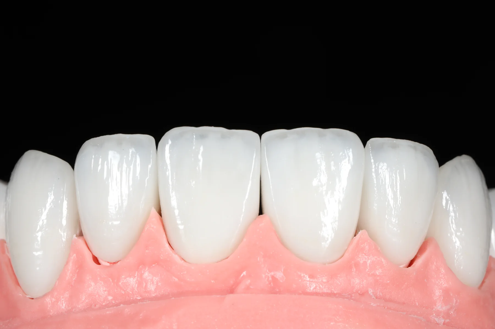
Veneers
Hand-layered veneers
e.max and feldspathic veneers, shade-matched from patient photos.
Veneer package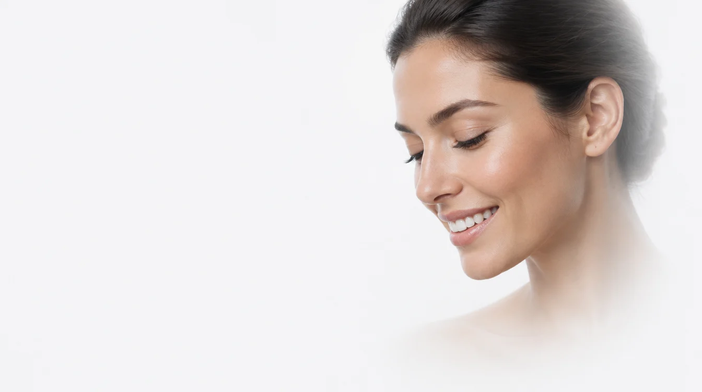
Veneers, crowns and full-arch restorations from a boutique lab in San Francisco.
Vasyl Hryn, CDT, works with dentists who expect more: predictable fit, natural esthetics and fewer chairside adjustments. Meet Vasyl
A certified dental technician in the US and a licensed dentist from Ukraine. He reads every case from the chair side, so restorations are biologically respectful, esthetic and functionally stable.
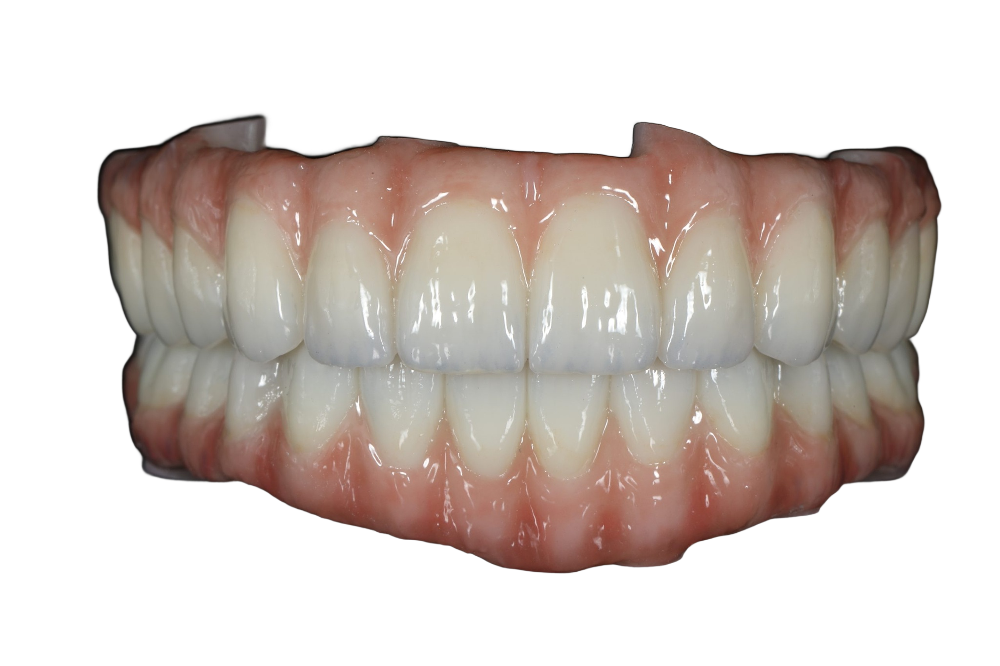

e.max and feldspathic veneers, shade-matched from patient photos.
Veneer package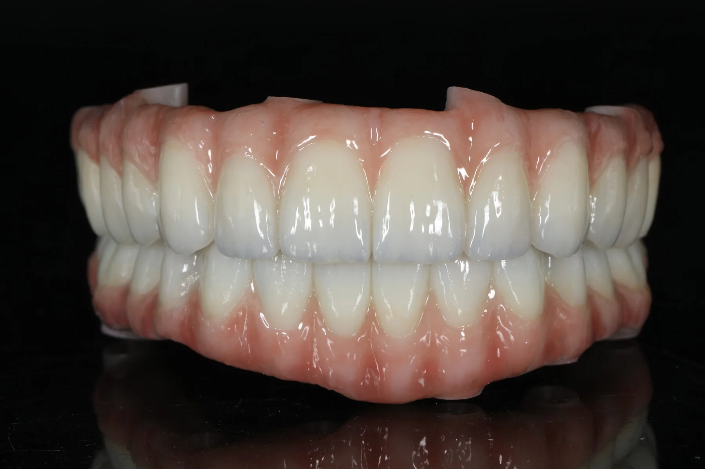
Zirconia full-arch restorations, from try-in to a final patients forget about.
Full-arch details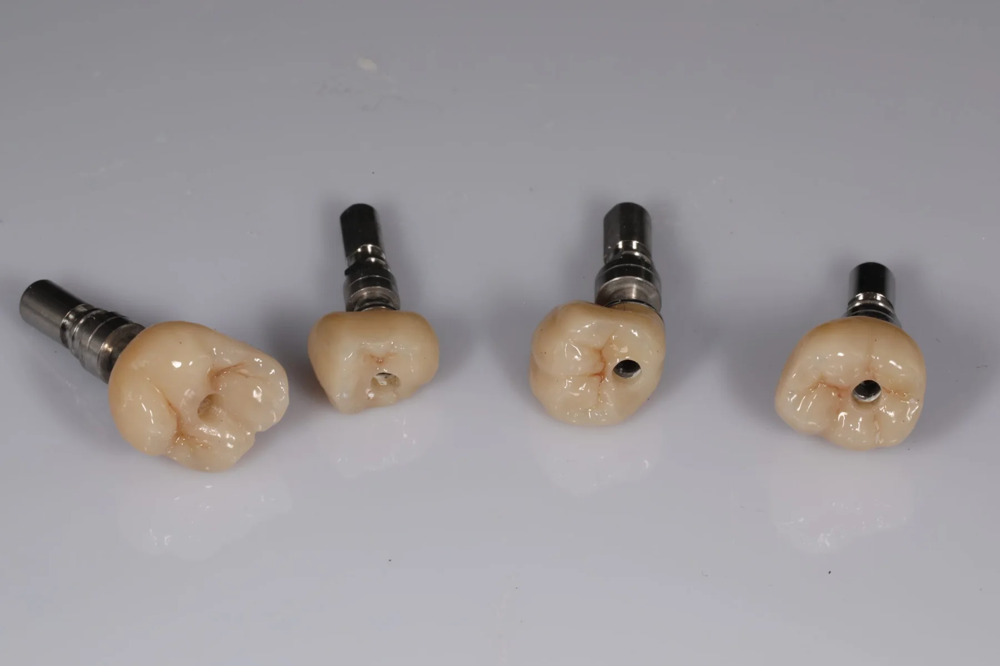
Screw-retained and cemented crowns on any platform, predictable every time.
Implant crownsMaterial, units and turnaround on every case, so you know exactly what to expect.
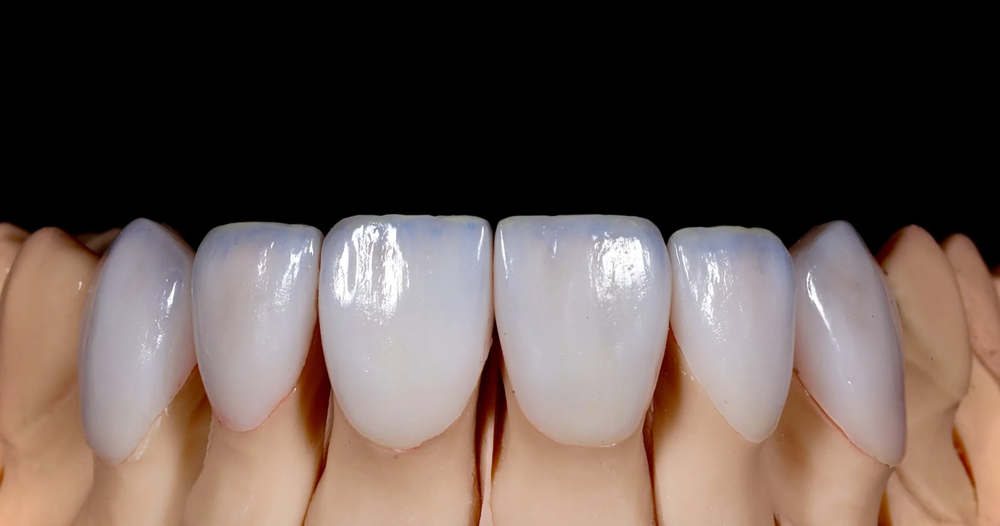
e.max veneersVeneers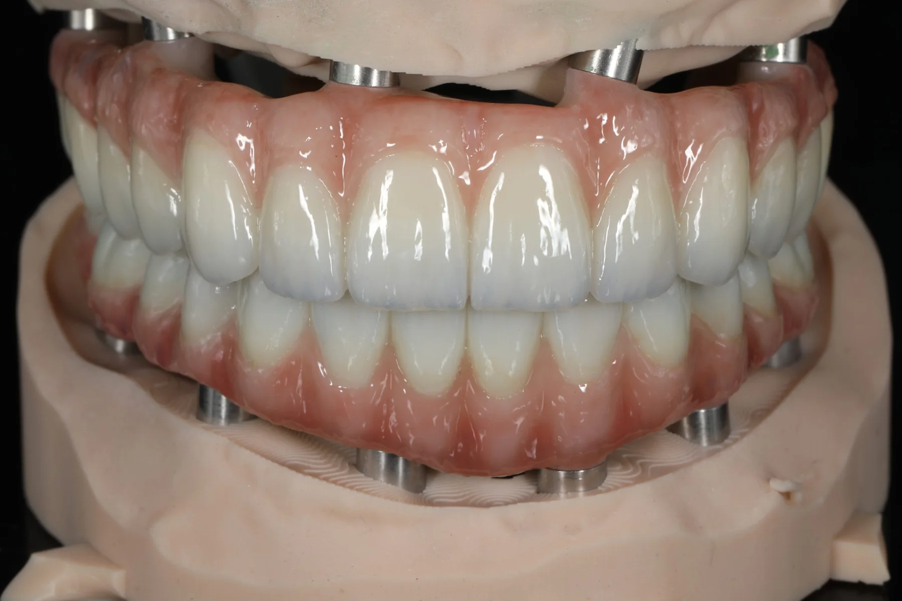
Zirconia full archAll-on-X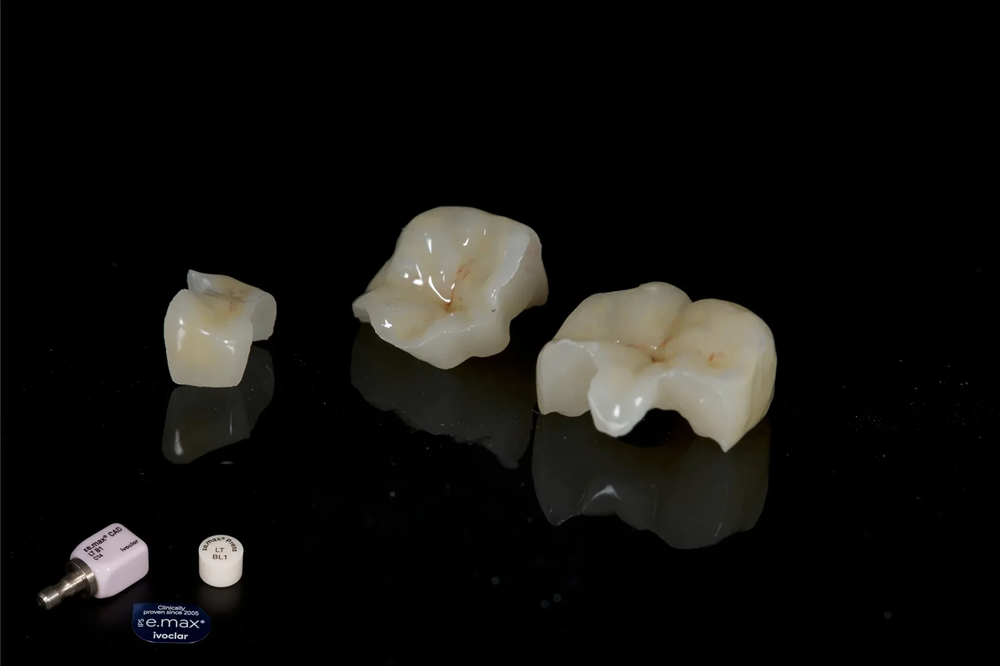
Posterior crownsCrowns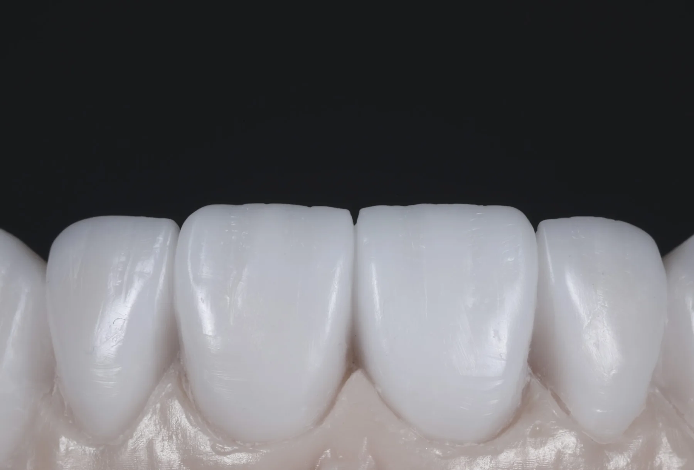
Anterior veneersVeneers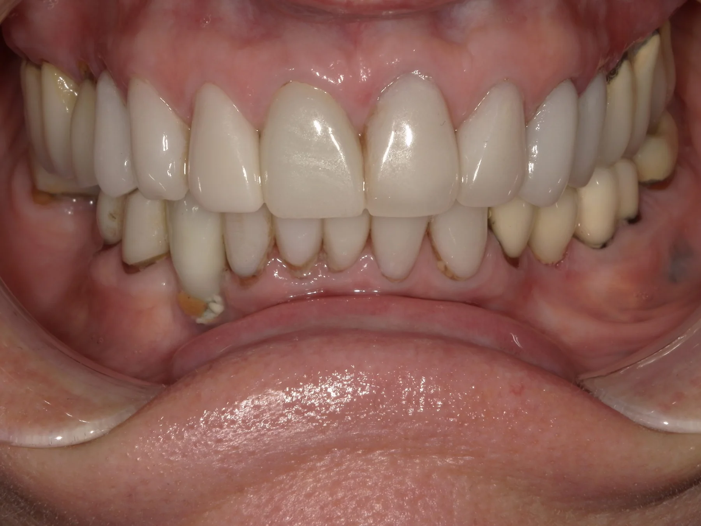
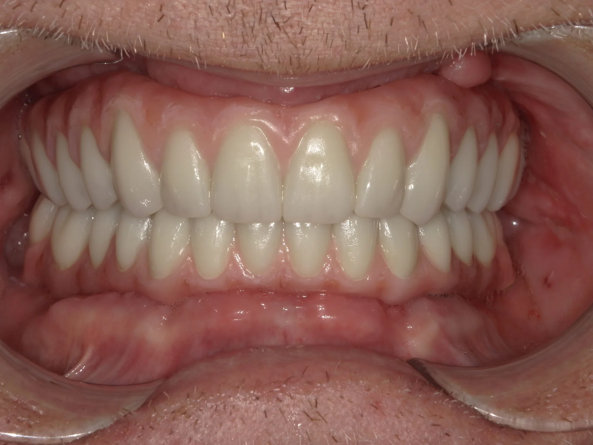
Intraoral scan or impression pickup in SF, RX form and photos.
Vasyl reviews the case and confirms a digital smile design with you.
CAD/CAM precision and hand-layered ceramics, checked on the articulator.
Standard cases in 5–7 business days, ready to seat.
Talk directly to the technician. We answer the same day.